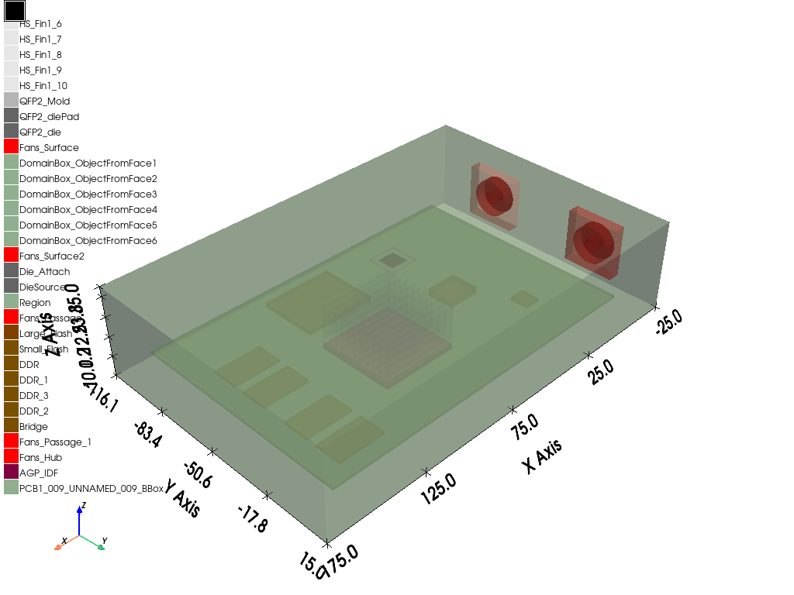

Note
Go to the end to download the full example code
Icepak: thermal analysis with 3D components#
This example shows how to create a thermal analysis of an electronic package by taking advantage of 3D components and features added by PyAEDT.
Import PyAEDT and download files#
Perform import of required classes from the pyaedt package and import the os package.
from pyaedt import Icepak, generate_unique_folder_name, downloads, settings
import os
# Download needed files
temp_folder = generate_unique_folder_name()
package_temp_name, qfp_temp_name = downloads.download_icepak_3d_component(temp_folder)
Create heatsink#
Open a new project in non-graphical mode.
ipk = Icepak(projectname=os.path.join(temp_folder, "Heatsink.aedt"), specified_version="2023.2", non_graphical=True,
close_on_exit=True, new_desktop_session=True)
# Remove air region created by default because it is not needed as the heatsink will be exported as a 3dcomponent
ipk.modeler.get_object_from_name("Region").delete()
# Definition of heatsink with boxes
hs_base = ipk.modeler.create_box(position=[0, 0, 0], dimensions_list=[37.5, 37.5, 2], name="HS_Base")
hs_base.material_name="Al-Extruded"
hs_fin = ipk.modeler.create_box(position=[0, 0, 2], dimensions_list=[37.5, 1, 18], name="HS_Fin1")
hs_fin.material_name="Al-Extruded"
hs_fin.duplicate_along_line([0, 3.65, 0], nclones=11)
ipk.plot(show=False, export_path=os.path.join(temp_folder, "Heatsink.jpg"))
# Definition of a mesh region. First a non-model box is created, then the mesh region is assigned
mesh_box = ipk.modeler.create_box(position=[-2, -2, -3], dimensions_list=[41.5, 41.5, 24])
mesh_box.model = False
mesh_region = ipk.mesh.assign_mesh_region([mesh_box.name])
mesh_region.UserSpecifiedSettings = True
mesh_region.MaxElementSizeX = "5mm"
mesh_region.MaxElementSizeY = "5mm"
mesh_region.MaxElementSizeZ = "1mm"
mesh_region.MinElementsInGap = "4"
mesh_region.MaxLevels = "2"
mesh_region.BufferLayers = "1"
mesh_region.update()
# Assignment of monitor objects
hs_fin5_object = ipk.modeler.get_object_from_name("HS_Fin1_5")
point_monitor_position = [0.5 * (hs_base.bounding_box[i] + hs_base.bounding_box[i + 3]) for i in range(2)] + [
hs_fin5_object.bounding_box[-1]] # average x,y, top z
ipk.monitor.assign_point_monitor(point_monitor_position, monitor_quantity=["Temperature", "HeatFlux"],
monitor_name="TopPoint")
ipk.monitor.assign_face_monitor(hs_base.bottom_face_z.id, monitor_quantity="Temperature", monitor_name="Bottom")
ipk.monitor.assign_point_monitor_in_object("HS_Fin1_5", monitor_quantity="Temperature", monitor_name="Fin5Center")
# Export the heatsink 3D component and close project. auxiliary_dict is set to true in order to export the
# monitor objects along with the .a3dcomp file.
os.mkdir(os.path.join(temp_folder, "componentLibrary"))
ipk.modeler.create_3dcomponent(
os.path.join(temp_folder, "componentLibrary", "Heatsink.a3dcomp"),
component_name="Heatsink",
auxiliary_dict=True
)
ipk.close_project(save_project=False)
Initializing new desktop!
Returning found desktop with PID 13564!
True
Create QFP#
Download and open a project containing a QPF.
ipk = Icepak(projectname=qfp_temp_name)
ipk.plot(show=False, export_path=os.path.join(temp_folder, "QFP2.jpg"))
# Create dataset for power dissipation.
x_datalist = [45, 53, 60, 70]
y_datalist = [0.5, 3, 6, 9]
ipk.create_dataset(
"PowerDissipationDataset",
x_datalist,
y_datalist,
zlist=None,
vlist=None,
is_project_dataset=False,
xunit="cel",
yunit="W",
zunit="",
vunit="",
)
# Assign source power condition to the die.
ipk.create_source_power(
"DieSource",
thermal_dependent_dataset="PowerDissipationDataset",
source_name="DieSource"
)
# Assign thickness to the die attach surface.
ipk.create_conduting_plate(face_id="Die_Attach",
thermal_specification="Thickness",
shell_conduction=True,
thickness="0.05mm",
solid_material="Epoxy Resin-Typical",
bc_name="Die_Attach",
)
# Assign monitor objects.
ipk.monitor.assign_point_monitor_in_object("QFP2_die", monitor_quantity="Temperature", monitor_name="DieCenter")
ipk.monitor.assign_surface_monitor("Die_Attach", monitor_quantity="Temperature", monitor_name="DieAttach")
# Export the QFP 3D component and close project. Here the auxiliary dictionary allows exporting not only the monitor
# objects but also the dataset used for the power source assignment.
ipk.modeler.create_3dcomponent(
os.path.join(temp_folder, "componentLibrary", "QFP.a3dcomp"),
component_name="QFP",
auxiliary_dict=True,
datasets=["PowerDissipationDataset"]
)
ipk.close_project(save_project=False)
Returning found desktop with PID 13564!
Returning found desktop with PID 13564!
True
Create electronic package#
Download and open a project containing the electronic package.
ipk = Icepak(projectname=package_temp_name)
ipk.plot(show=False, export_path=os.path.join(temp_folder, "electronic_package_missing_obj.jpg"))
# The heatsink and the QFP are missing. They can be inserted as 3d components. The auxiliary files are needed since
# the aim is to import also monitor objects and datasets. Also, a coordinate system is created for the heatsink so
# that it is placed on top of the AGP.
agp = ipk.modeler.get_object_from_name("AGP_IDF")
cs = ipk.modeler.create_coordinate_system(
origin=[agp.bounding_box[0], agp.bounding_box[1], agp.bounding_box[-1]],
name="HeatsinkCS",
reference_cs="Global",
x_pointing=[1, 0, 0],
y_pointing=[0, 1, 0],
)
heatsink_obj = ipk.modeler.insert_3d_component(
comp_file=os.path.join(temp_folder, "componentLibrary", "Heatsink.a3dcomp"),
targetCS="HeatsinkCS", auxiliary_dict=True)
QFP2_obj = ipk.modeler.insert_3d_component(
comp_file=os.path.join(temp_folder, "componentLibrary", "QFP.a3dcomp"),
targetCS="Global", auxiliary_dict=True)
ipk.plot(show=False, export_path=os.path.join(temp_folder, "electronic_package.jpg"))
# Create a coordinate system at the xmin, ymin, zmin of the model
bounding_box = ipk.modeler.get_model_bounding_box()
cs_pcb_assembly = ipk.modeler.create_coordinate_system(
origin=[bounding_box[0], bounding_box[1], bounding_box[2]],
name="PCB_Assembly",
reference_cs="Global",
x_pointing=[1, 0, 0],
y_pointing=[0, 1, 0],
)
# Export of the whole assembly as 3d component and close project. First, a flattening is needed because nested 3d
# components are not natively supported. Then it is possible to export the whole package as 3d component. Here the
# auxiliary dictionary is needed to export monitor objects, datasets and native components.
ipk.flatten_3d_components()
ipk.modeler.create_3dcomponent(
component_file=os.path.join(temp_folder, "componentLibrary", "PCBAssembly.a3dcomp"),
component_name="PCBAssembly",
auxiliary_dict=True,
included_cs=["Global", "HeatsinkCS", "PCB_Assembly"],
reference_cs="PCB_Assembly"
)
ipk.close_project(save_project=False)
- 
Returning found desktop with PID 13564!
C:\actions-runner\_work\pyaedt\pyaedt\testenv\lib\site-packages\pyaedt\modeler\cad\Primitives3D.py:1297: ResourceWarning: unclosed file <_io.TextIOWrapper name='D:\\Temp\\pyaedt_prj_PHE\\componentLibrary\\Heatsink.a3dcomp.json' mode='r' encoding='cp1252'>
aux_dict = json.load(open(auxiliary_dict, "r"))
Returning found desktop with PID 13564!
C:\actions-runner\_work\pyaedt\pyaedt\testenv\lib\site-packages\pyaedt\modeler\cad\Primitives3D.py:1297: ResourceWarning: unclosed file <_io.TextIOWrapper name='D:\\Temp\\pyaedt_prj_PHE\\componentLibrary\\QFP.a3dcomp.json' mode='r' encoding='cp1252'>
aux_dict = json.load(open(auxiliary_dict, "r"))
Returning found desktop with PID 13564!
Returning found desktop with PID 13564!
Returning found desktop with PID 13564!
Returning found desktop with PID 13564!
Returning found desktop with PID 13564!
Returning found desktop with PID 13564!
True
Create main assembly#
Open a new empty project.
ipk = Icepak(projectname=os.path.join(temp_folder, "main_assembly.aedt"))
# Create a support for multiple PCB assemblies
support_obj = ipk.modeler.create_box(position=[-60, -160, 0], dimensions_list=[270, 580, -10], name="PCB_support")
support_obj.material_name="plexiglass"
# Create two coordinate systems to place two electronic package assemblies
cs1 = ipk.modeler.create_coordinate_system(
origin=[-40, -120, 0],
name="PCB1",
reference_cs="Global",
x_pointing=[1, 0, 0],
y_pointing=[0, 1, 0],
)
cs2 = ipk.modeler.create_coordinate_system(
origin=[0, 380, 0],
name="PCB2",
reference_cs="PCB1",
x_pointing=[1, 0, 0],
y_pointing=[0, 1, 0],
)
# Import the electronic packages on the support
PCB1_obj = ipk.modeler.insert_3d_component(
comp_file=os.path.join(temp_folder, "componentLibrary", "PCBAssembly.a3dcomp"),
targetCS=cs1.name, auxiliary_dict=True)
PCB2_obj = ipk.modeler.insert_3d_component(
comp_file=os.path.join(temp_folder, "componentLibrary", "PCBAssembly.a3dcomp"),
targetCS=cs2.name, auxiliary_dict=True)
# To demonstrate once again the flexibility of this method: flatten the nested components structure again and export the whole assembly as a 3d component
ipk.flatten_3d_components()
ipk.modeler.create_3dcomponent(
component_file=os.path.join(temp_folder, "componentLibrary", "MainAssembly.a3dcomp"),
component_name="MainAssembly",
auxiliary_dict=True,
native_components=True,
included_cs=["PCBAssembly1_PCB_Assembly", "PCBAssembly2_PCB_Assembly",
"PCBAssembly1_PCB_Assembly_ref", "PCBAssembly2_PCB_Assembly_ref"]
)
ipk.plot(show=False, export_path=os.path.join(temp_folder, "main_assembly.jpg"))
ipk.close_project(save_project=True)
ipk.release_desktop()
Returning found desktop with PID 13564!
C:\actions-runner\_work\pyaedt\pyaedt\testenv\lib\site-packages\pyaedt\modeler\cad\Primitives3D.py:1297: ResourceWarning: unclosed file <_io.TextIOWrapper name='D:\\Temp\\pyaedt_prj_PHE\\componentLibrary\\PCBAssembly.a3dcomp.json' mode='r' encoding='cp1252'>
aux_dict = json.load(open(auxiliary_dict, "r"))
Returning found desktop with PID 13564!
Returning found desktop with PID 13564!
Returning found desktop with PID 13564!
Returning found desktop with PID 13564!
Returning found desktop with PID 13564!
Returning found desktop with PID 13564!
Returning found desktop with PID 13564!
Returning found desktop with PID 13564!
Returning found desktop with PID 13564!
Returning found desktop with PID 13564!
Returning found desktop with PID 13564!
True
Total running time of the script: (2 minutes 17.271 seconds)